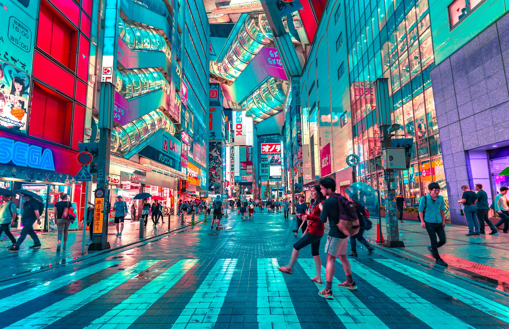

ВАША МАЛЕНЬКАЯ БОЛЬШАЯ ПОЕЗДКАДва билета.
Два билета.
Тысяча впечатлений.
От первого рамена до последнего неонового вечера.
Собрали ту Японию, в которую хочется вместе.
東京 Токио→大阪 Осака→京都 Киото
JAPAN, JUST US TWO日本MAY 2027 · 07—15
ВЫБИРАЕМ ПО НАСТРОЕНИЮ
Чем займёмся?
Ваши желания и места, которые хочется вам показать.
Включите геопозицию, чтобы увидеть расстояния от вас в метрах.
Хороший план — оставить место случайностям.
旅На 9 дней выбирайте пару главных мест в день. Остальное — по настроению.